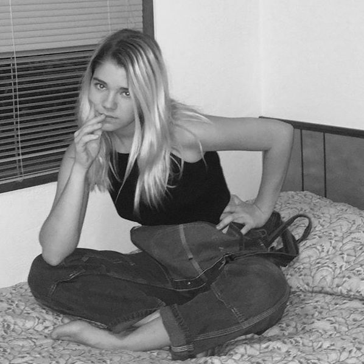

Zeniada is an intercollegiate poetry and art magazine based at Johns Hopkins University. Every spring and fall, we publish work original poetry and artwork from undergraduates across the country.
Submit
Zeniada accepts poetry (including prose poetry) and artwork. All submissions are judged anonymously. Anyone who is enrolled in an undergraduate program for the current school year is welcome to submit.
Zeniada is currently seeking submissions for Spring 2018. Please email poetry and artwork to submit@zeniada.com.
Submission Guidelines
The subject of your email should be the category of your work (i.e. "Poetry" or "Art").
In the body of the email, please include:
Your name
Your expected year of graduation
The name of the undergraduate school you currently attend
If you're submitting artwork, the medium/media used
Any special instructions or comments regarding your work
If you are submitting poetry, please attach your work as a Word document. Your name, school, or any other type of identification should not appear anywhere in this document.
Any questions regarding submissions can be sent to ask@zeniada.com.
Join
No positions for the Fall 2017 semester are open at the time. Applicants must be currently pursuing an undergraduate degree at Johns Hopkins University.
Vivian studies computer science and applied math. When she's not busy throwing shade at writer's block, she's eating food, quoting Star Wars, or listening to the Hamilton soundtrack nonstop.

Hannah ThorpeDesign Manager, Senior Editor
Hannah is studying Writing Seminars and Philosophy at Johns Hopkins University. She is from Topanga, CA.
Allison JiangMarketing Manager, Senior Editor
Allison is a Writing Seminars major from Holmdel, New Jersey. She loves television, writing, writing about television, Chipotle, minimalism, and a lot of other stuff.
Alan FangWorkshop Manager, Senior Editor
Alan is a sophomore Writing Seminars major from Westfield, New Jersey who enjoys the Beat Generation, strawberries, existential philosophy, and bubble tea, among other things.
Stephanie HaennEditor
Steph is a Writing Seminars and International Studies double major from Philadelphia.
Nicola Sumi KimEditor
Sumi is a Writing Seminars / Global Environmental Change and Sustainability major who lives in London, UK. She's mostly interested in writing, The Beatles, and finally perfecting playing her kazoo (she's not close).
Grace Takeda Editor
Grace is a Writing Seminars major from California who enjoys writing, reading, playing the piano and violin, and listening to Phoenix in her spare time.
 Zeniada is an intercollegiate poetry and art magazine based at Johns Hopkins University. Every spring and fall, we publish work original poetry and artwork from undergraduates across the country.
Zeniada is an intercollegiate poetry and art magazine based at Johns Hopkins University. Every spring and fall, we publish work original poetry and artwork from undergraduates across the country.